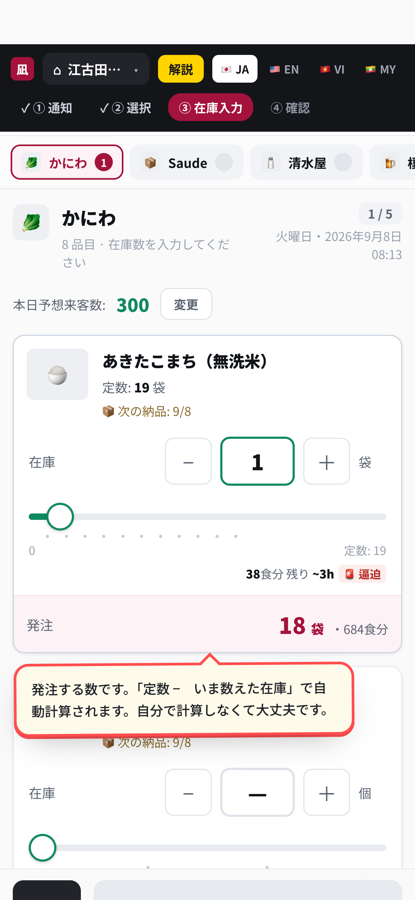
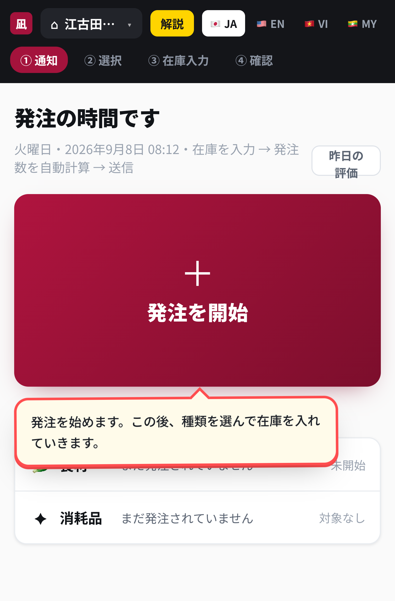

なぎちゃん店舗のみなさんへ ／ 2026年9月9日
① ムダを減らして、お店にお金を残す
② 誰でもできる形にして、教えるのを楽にする
お店の利益は、材料にいくら使ったかで大きく変わります。
会社ではこれを 「F」 と呼んでいます。食材 のFです。
みなさんが毎日数えている在庫が、そのまま会社の利益になります。
新しいお店を出すたびに、人が入れ替わります。メンバーも変わります。
そのたびに一から教えていたら、お店は増やせません。
お店を広げていくために、必要なことです。
覚えなくて大丈夫です。指が動けば十分です。
いちばん時間がかかるのは ③ です。あとは押すだけです。
発注する数は、アプリが計算します。
自分で計算しないでください。

画面のいちばん上に出ます。31品ぜんぶ入ると緑になります。
聞かれたら、いま何％かを答えてください。
押すと、黄色い説明が出ます。
出したくない人は、上の 解説 を押すと消せます。
言葉を変えるときは、右上の 🇯🇵 JA EN VI MY

ログインも、アプリのインストールもいりません。
次は、実際に在庫を数えて入れてみてください。
いま押したこれが、そのままお店の利益になります。